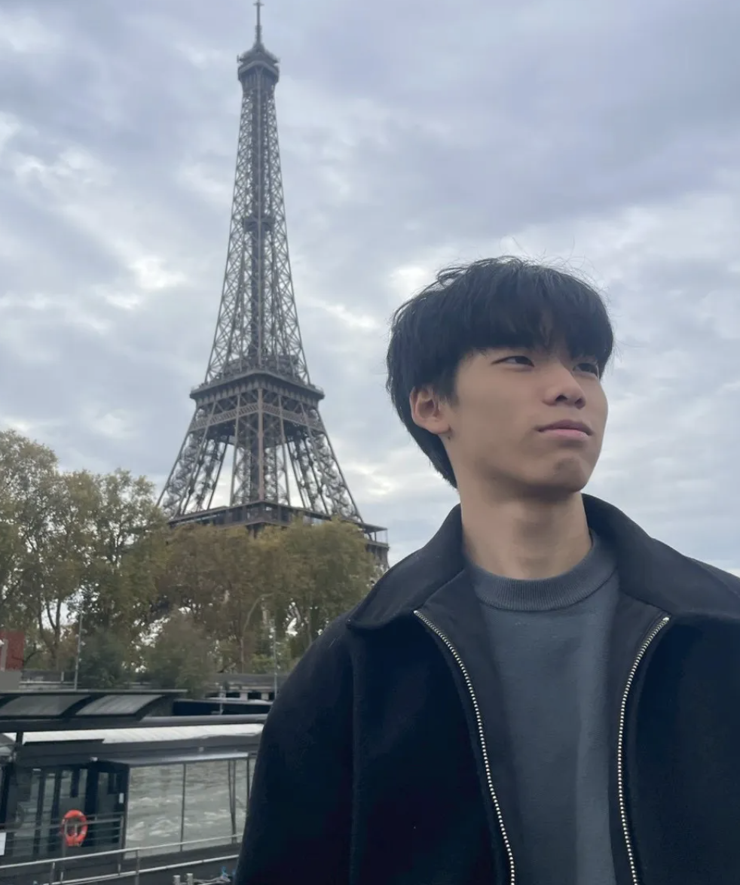

Masato Hirozane age 16
Estimated Speaking Time: 9min30sec
My speech challenges the misconception that luck is random chance, and argues that it is something we can actively build on through small actions. By adopting a win-win mindset, forming weak ties, and acting on the principle of “nantonaku”, we create opportunities that later look like lucky breaks. Understanding how luck works comes with a strong responsibility to use it to design opportunities for others as well.